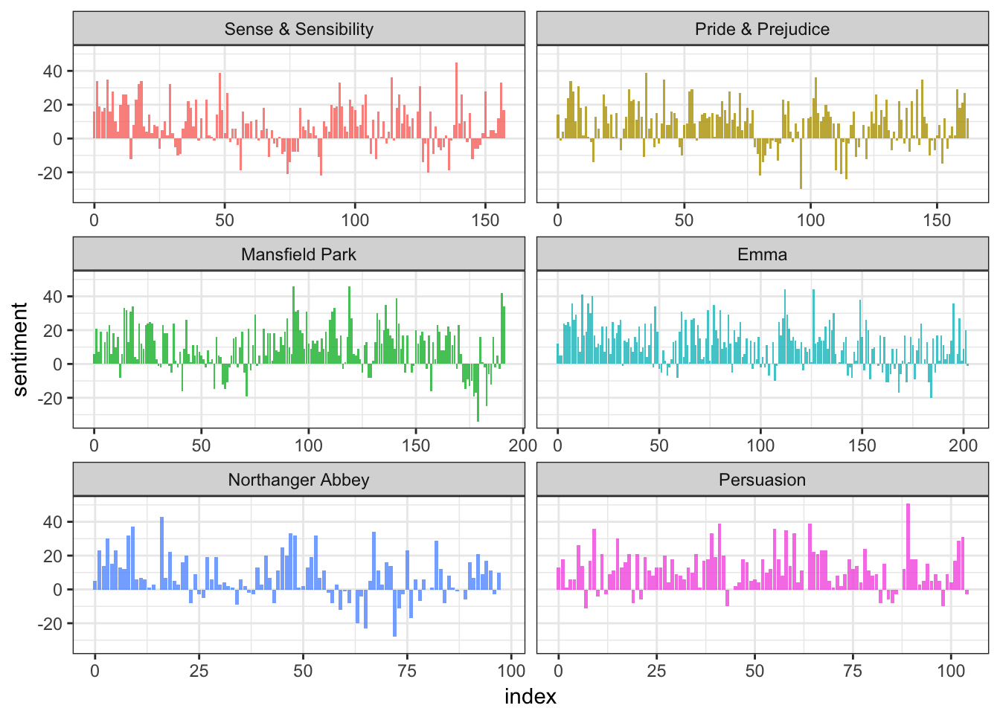
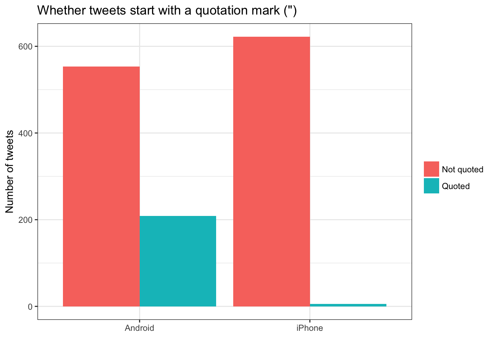
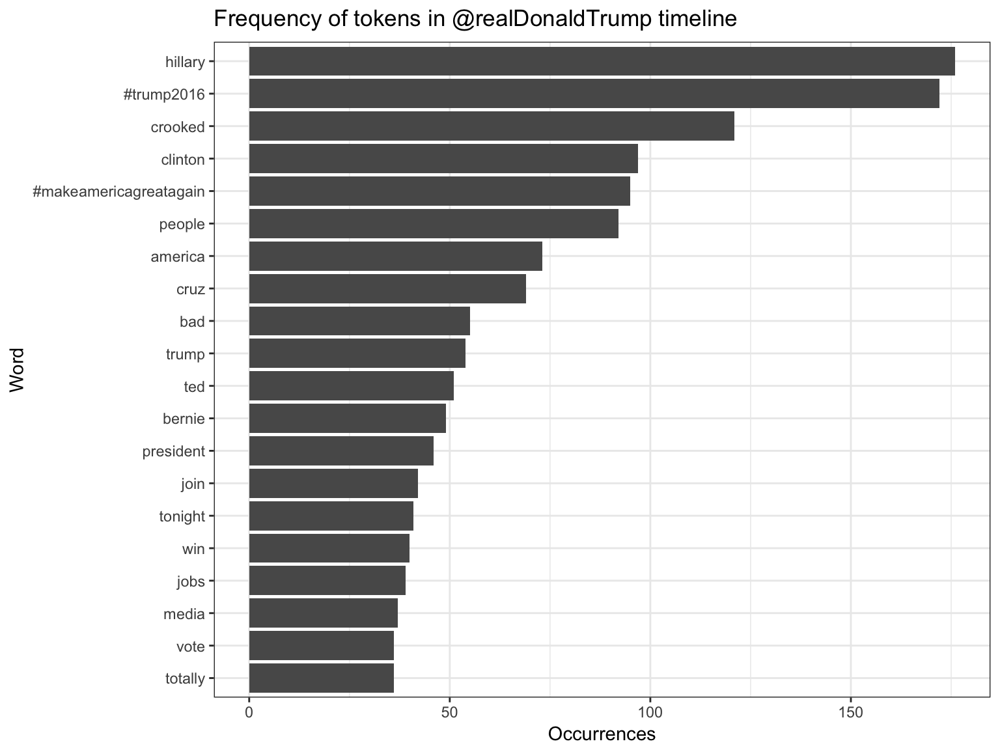
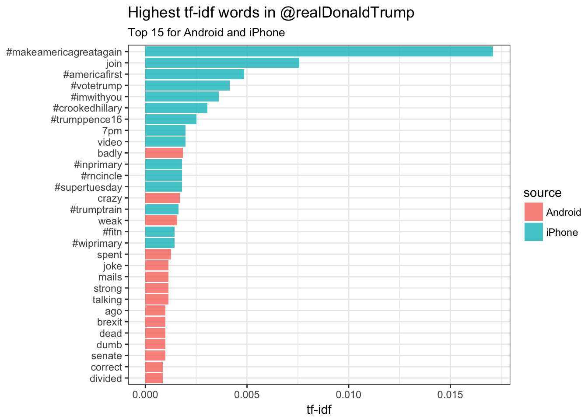
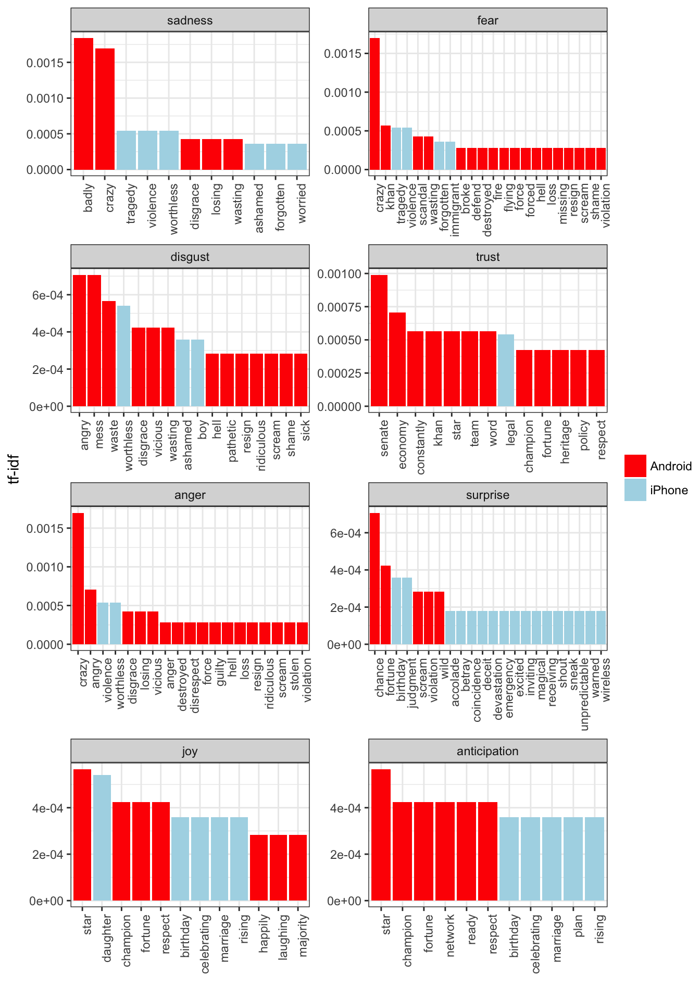

This content is from the fall 2016 version of this course. Please go here for the most recent version.
Text analysis: fundamentals and sentiment analysis
library(tidyverse)
library(lubridate)
library(stringr)
library(tidytext)
library(broom)
library(scales)
theme_set(theme_bw())Objectives
- Identify the basic workflow for conducting text analysis
- Define sentiment analysis and review how sentiment analysis was used in Conservatives report, but liberals display, greater happiness
- Define the tidy text format
- Demonstrate how to conduct sentiment analysis using David Robinson’s Text analysis of Trump’s tweets confirms he writes only the (angrier) Android half
Basic workflow for text analysis
Draws on Common Text Mining Workflow
- Obtain your text sources
- Extract documents and move into a corpus
- Transformation
- Extract features
- Perform analysis
Obtain your text sources
Can come from lots of areas:
- Web sites
- Databases
- PDF documents
- Digital scans of printed materials
The easier to convert your text data into digitally stored text, the cleaner your results and fewer transcription errors
Extract documents and move into a corpus
- Text corpus - large and structured set of texts
- Typically stores the text as a raw character string with metadata and details stored with the text
Transformation
Examples of typical transformations include:
- Tag segments of speech for part-of-speech (nouns, verbs, adjectives, etc.) or entity recognition (person, place, company, etc.)
- Standard text processing
- Convert to lower case
- Remove punctuation
- Remove numbers
- Remove stopwords - common parts of speech that are not informative such as a, an, be, of, etc.
- Remove domain-specific stopwords
- Stemming - reduce words to their word stem
- “Fishing”, “fished”, and “fisher” -> “fish”
Extract features
- Convert the text string into some sort of quantifiable measures
- Bag-of-words model
- Each document is represented as a vector which counts the frequency of each term’s appearance in the document
- Combine all the vectors for each document together and you create a term-document matrix
- Each row is a document
- Each column is a term
- Each cell represents the frequency of the term appearing in the document
- Ignores context
- Could randomly scramble the order of terms appearing in the document
- Would still get the same term-document matrix
Perform analysis
- Lots of approaches to take
- Basic
- Word frequency
- Collocation - words commonly appearing near each other
- Dictionary tagging - locating a specific set of words in the texts
- Advanced
- Document classification
- Supervised
- Unsupervised
- Corpora comparison - comparing the content of different groups of text
- Detecting clusters of document features - topic modeling
- Document classification
Conservatives report, but liberals display, greater happiness
Based on a theory of psychology that conservatives are generally happier than liberals. Authors argue that previous findings are flawed because they rely on self-reported happiness, which is an inaccurate measure of individual happiness. Instead, they measure happiness (in part) based on the text of Congressional speeches and Twitter posts.
Sentiment analysis
Sentiment analysis uses text analysis to estimate the attitude of a speaker or writer with respect to some topic or the overall polarity of the document. For example, the sentence
I am happy
contains words and language typically associated with positive feelings and emotions. Therefore if some one tweeted “I am happy”, we could make an educated guess that the person is expressing positive feelings.
Obviously it would be difficult for us to create a complete dictionary that classifies words based on their emotional affect; fortunately other scholars have already done this for us. Some simply classify words and terms as positive or negative:
get_sentiments("bing")## # A tibble: 6,788 × 2
## word sentiment
## <chr> <chr>
## 1 2-faced negative
## 2 2-faces negative
## 3 a+ positive
## 4 abnormal negative
## 5 abolish negative
## 6 abominable negative
## 7 abominably negative
## 8 abominate negative
## 9 abomination negative
## 10 abort negative
## # ... with 6,778 more rowsOthers rate them on a numeric scale:
get_sentiments("afinn")## # A tibble: 2,476 × 2
## word score
## <chr> <int>
## 1 abandon -2
## 2 abandoned -2
## 3 abandons -2
## 4 abducted -2
## 5 abduction -2
## 6 abductions -2
## 7 abhor -3
## 8 abhorred -3
## 9 abhorrent -3
## 10 abhors -3
## # ... with 2,466 more rowsStill others rate words based on specific sentiments
get_sentiments("nrc")## # A tibble: 13,901 × 2
## word sentiment
## <chr> <chr>
## 1 abacus trust
## 2 abandon fear
## 3 abandon negative
## 4 abandon sadness
## 5 abandoned anger
## 6 abandoned fear
## 7 abandoned negative
## 8 abandoned sadness
## 9 abandonment anger
## 10 abandonment fear
## # ... with 13,891 more rowsget_sentiments("nrc") %>%
count(sentiment)## # A tibble: 10 × 2
## sentiment n
## <chr> <int>
## 1 anger 1247
## 2 anticipation 839
## 3 disgust 1058
## 4 fear 1476
## 5 joy 689
## 6 negative 3324
## 7 positive 2312
## 8 sadness 1191
## 9 surprise 534
## 10 trust 1231In order to assess the document or speaker’s overall sentiment, you simply count up the number of words associated with each sentiment. For instance, how positive or negative are Jane Austen’s novels? We can determine this by counting up the number of positive and negative words in each chapter, like so:
library(janeaustenr)
tidy_books <- austen_books() %>%
group_by(book) %>%
mutate(linenumber = row_number(),
chapter = cumsum(str_detect(text, regex("^chapter [\\divxlc]",
ignore_case = TRUE)))) %>%
ungroup() %>%
unnest_tokens(word, text)
janeaustensentiment <- tidy_books %>%
inner_join(get_sentiments("bing")) %>%
count(book, index = linenumber %/% 80, sentiment) %>%
spread(sentiment, n, fill = 0) %>%
mutate(sentiment = positive - negative)## Joining, by = "word"ggplot(janeaustensentiment, aes(index, sentiment, fill = book)) +
geom_bar(alpha = 0.8, stat = "identity", show.legend = FALSE) +
facet_wrap(~book, ncol = 2, scales = "free_x")
Ignoring the specific code, this is a relatively simple operation. Once you have the text converted into a format suitable for analysis, tabulating and counting term frequency is not a complicated operation.
You can also conduct further analysis once you have this information. In this article, the researchers used speeches from the Congressional record as their corpus. They read this into a software package, converted the text into individual terms within each politician’s speeches, and counted up the number of positive and negative terms spoken by each member of Congress. Once they had this value for each politician, they could build a statistical model to predict how positive or negative an individual would sound based on known characteristics (e.g. political conservatism/liberalism, party membership, chamber majority, age, ethnicity, sex)
Likewise, the authors performed a similar analysis on a corpus of tweets from followers of the Democratic and Republican parties. Using the Twitter API, they harvested the tweets, imported them into their software, then conducted the same type of analysis - counting the number of positive and negative words in each tweet, then aggregating for each political party.
tidytext
A lot of these actions can be performed using tidy methods, as long as the text is stored in a tidy format. The tidytext package is a recent addition to the tidyverse that attempts to implement a tidy framework for text analysis in R. To my knowledge, there is no comparable tidy method for Python. Python is arguably stronger than R in some aspects of text analysis, however if we want to perform this work primarily using a tidy approach R is the way to go.
Tidy text format
- Defined as one-term-per-row
- Differs from the document-term matrix (one-document-per-row and one-term-per-column)
Exploring content of Donald Trump’s Twitter timeline
Every non-hyperbolic tweet is from iPhone (his staff).
— Todd Vaziri (@tvaziri) August 6, 2016
Every hyperbolic tweet is from Android (from him). pic.twitter.com/GWr6D8h5ed
If you want to know what Donald Trump personally tweets from his account versus his handlers, it looks like we might have a way of detecting this difference. Tweets from an iPhone are his staff; tweets from an Android are from him. Can we quantify this behavior or use text analysis to lend evidence to this argument? Yes.
Obtaining documents
library(twitteR)##
## Attaching package: 'twitteR'## The following objects are masked from 'package:dplyr':
##
## id, location# You'd need to set global options with an authenticated app
setup_twitter_oauth(getOption("twitter_api_key"),
getOption("twitter_api_token"))
# We can request only 3200 tweets at a time; it will return fewer
# depending on the API
trump_tweets <- userTimeline("realDonaldTrump", n = 3200)
trump_tweets_df <- trump_tweets %>%
map_df(as.data.frame) %>%
tbl_df()# if you want to follow along without setting up Twitter authentication,
# just use this dataset:
load(url("http://varianceexplained.org/files/trump_tweets_df.rda"))Clean up the data
tweets <- trump_tweets_df %>%
select(id, statusSource, text, created) %>%
extract(statusSource, "source", "Twitter for (.*?)<") %>%
filter(source %in% c("iPhone", "Android"))
tweets %>%
head() %>%
knitr::kable(caption = "Example of Donald Trump tweets")| id | source | text | created |
|---|---|---|---|
| 762669882571980801 | Android | My economic policy speech will be carried live at 12:15 P.M. Enjoy! | 2016-08-08 15:20:44 |
| 762641595439190016 | iPhone | Join me in Fayetteville, North Carolina tomorrow evening at 6pm. Tickets now available at: https://t.co/Z80d4MYIg8 | 2016-08-08 13:28:20 |
| 762439658911338496 | iPhone | #ICYMI: “Will Media Apologize to Trump?” https://t.co/ia7rKBmioA | 2016-08-08 00:05:54 |
| 762425371874557952 | Android | Michael Morell, the lightweight former Acting Director of C.I.A., and a man who has made serious bad calls, is a total Clinton flunky! | 2016-08-07 23:09:08 |
| 762400869858115588 | Android | The media is going crazy. They totally distort so many things on purpose. Crimea, nuclear, “the baby” and so much more. Very dishonest! | 2016-08-07 21:31:46 |
| 762284533341417472 | Android | I see where Mayor Stephanie Rawlings-Blake of Baltimore is pushing Crooked hard. Look at the job she has done in Baltimore. She is a joke! | 2016-08-07 13:49:29 |
Comparison using metadata
One consideration is what time of day the tweets occur, which we’d expect to be a “signature” of their user. Here we can certainly spot a difference:
tweets %>%
count(source, hour = hour(with_tz(created, "EST"))) %>%
mutate(percent = n / sum(n)) %>%
ggplot(aes(hour, percent, color = source)) +
geom_line() +
scale_y_continuous(labels = percent_format()) +
labs(x = "Hour of day (EST)",
y = "% of tweets",
color = "")
Trump on the Android does a lot more tweeting in the morning, while the campaign posts from the iPhone more in the afternoon and early evening.
Another place we can spot a difference is in Trump’s anachronistic behavior of “manually retweeting” people by copy-pasting their tweets, then surrounding them with quotation marks:
“@trumplican2016: @realDonaldTrump @DavidWohl stay the course mr trump your message is resonating with the PEOPLE”
— Donald J. Trump (@realDonaldTrump) July 28, 2016
Almost all of these quoted tweets are posted from the Android:
tweets %>%
count(source,
quoted = ifelse(str_detect(text, '^"'), "Quoted", "Not quoted")) %>%
ggplot(aes(source, n, fill = quoted)) +
geom_bar(stat = "identity", position = "dodge") +
labs(x = "", y = "Number of tweets", fill = "") +
ggtitle('Whether tweets start with a quotation mark (")')
Comparison of words
Now that we’re sure there’s a difference between these two accounts, what can we say about the difference in the content? We can use the tidytext package to analyze this.
We start by dividing into individual words using the unnest_tokens function, and removing some common “stopwords”. This is a common aspect to preparing text for analysis. Typically, tokens are single words from a document. However they can also be bi-grams (pairs of words), tri-grams (three-word sequences), n-grams (\(n\)-length sequences of words), or in this case, individual words, hashtags, or references to other Twitter users. Because tweets are a special form of text (they can include words, urls, references to other users, hashtags, etc.) we need to use a custom tokenizing function to convert the text into tokens.
library(tidytext)
reg <- "([^A-Za-z\\d#@']|'(?![A-Za-z\\d#@]))" # custom regular expression to tokenize tweets
# function to neatly print the first 10 rows using kable
print_neat <- function(df){
df %>%
head() %>%
knitr::kable()
}
# tweets data frame
tweets %>%
print_neat()| id | source | text | created |
|---|---|---|---|
| 762669882571980801 | Android | My economic policy speech will be carried live at 12:15 P.M. Enjoy! | 2016-08-08 15:20:44 |
| 762641595439190016 | iPhone | Join me in Fayetteville, North Carolina tomorrow evening at 6pm. Tickets now available at: https://t.co/Z80d4MYIg8 | 2016-08-08 13:28:20 |
| 762439658911338496 | iPhone | #ICYMI: “Will Media Apologize to Trump?” https://t.co/ia7rKBmioA | 2016-08-08 00:05:54 |
| 762425371874557952 | Android | Michael Morell, the lightweight former Acting Director of C.I.A., and a man who has made serious bad calls, is a total Clinton flunky! | 2016-08-07 23:09:08 |
| 762400869858115588 | Android | The media is going crazy. They totally distort so many things on purpose. Crimea, nuclear, “the baby” and so much more. Very dishonest! | 2016-08-07 21:31:46 |
| 762284533341417472 | Android | I see where Mayor Stephanie Rawlings-Blake of Baltimore is pushing Crooked hard. Look at the job she has done in Baltimore. She is a joke! | 2016-08-07 13:49:29 |
# remove manual retweets
tweets %>%
filter(!str_detect(text, '^"')) %>%
print_neat()| id | source | text | created |
|---|---|---|---|
| 762669882571980801 | Android | My economic policy speech will be carried live at 12:15 P.M. Enjoy! | 2016-08-08 15:20:44 |
| 762641595439190016 | iPhone | Join me in Fayetteville, North Carolina tomorrow evening at 6pm. Tickets now available at: https://t.co/Z80d4MYIg8 | 2016-08-08 13:28:20 |
| 762439658911338496 | iPhone | #ICYMI: “Will Media Apologize to Trump?” https://t.co/ia7rKBmioA | 2016-08-08 00:05:54 |
| 762425371874557952 | Android | Michael Morell, the lightweight former Acting Director of C.I.A., and a man who has made serious bad calls, is a total Clinton flunky! | 2016-08-07 23:09:08 |
| 762400869858115588 | Android | The media is going crazy. They totally distort so many things on purpose. Crimea, nuclear, “the baby” and so much more. Very dishonest! | 2016-08-07 21:31:46 |
| 762284533341417472 | Android | I see where Mayor Stephanie Rawlings-Blake of Baltimore is pushing Crooked hard. Look at the job she has done in Baltimore. She is a joke! | 2016-08-07 13:49:29 |
# remove urls
tweets %>%
filter(!str_detect(text, '^"')) %>%
mutate(text = str_replace_all(text, "https://t.co/[A-Za-z\\d]+|&", "")) %>%
print_neat()| id | source | text | created |
|---|---|---|---|
| 762669882571980801 | Android | My economic policy speech will be carried live at 12:15 P.M. Enjoy! | 2016-08-08 15:20:44 |
| 762641595439190016 | iPhone | Join me in Fayetteville, North Carolina tomorrow evening at 6pm. Tickets now available at: | 2016-08-08 13:28:20 |
| 762439658911338496 | iPhone | #ICYMI: “Will Media Apologize to Trump?” | 2016-08-08 00:05:54 |
| 762425371874557952 | Android | Michael Morell, the lightweight former Acting Director of C.I.A., and a man who has made serious bad calls, is a total Clinton flunky! | 2016-08-07 23:09:08 |
| 762400869858115588 | Android | The media is going crazy. They totally distort so many things on purpose. Crimea, nuclear, “the baby” and so much more. Very dishonest! | 2016-08-07 21:31:46 |
| 762284533341417472 | Android | I see where Mayor Stephanie Rawlings-Blake of Baltimore is pushing Crooked hard. Look at the job she has done in Baltimore. She is a joke! | 2016-08-07 13:49:29 |
# unnest into tokens - tidytext format
tweets %>%
filter(!str_detect(text, '^"')) %>%
mutate(text = str_replace_all(text, "https://t.co/[A-Za-z\\d]+|&", "")) %>%
unnest_tokens(word, text, token = "regex", pattern = reg) %>%
print_neat()| id | source | created | word |
|---|---|---|---|
| 676494179216805888 | iPhone | 2015-12-14 20:09:15 | record |
| 676494179216805888 | iPhone | 2015-12-14 20:09:15 | of |
| 676494179216805888 | iPhone | 2015-12-14 20:09:15 | health |
| 676494179216805888 | iPhone | 2015-12-14 20:09:15 | #makeamericagreatagain |
| 676494179216805888 | iPhone | 2015-12-14 20:09:15 | #trump2016 |
| 676509769562251264 | iPhone | 2015-12-14 21:11:12 | another |
# remove stop words
tweets %>%
filter(!str_detect(text, '^"')) %>%
mutate(text = str_replace_all(text, "https://t.co/[A-Za-z\\d]+|&", "")) %>%
unnest_tokens(word, text, token = "regex", pattern = reg) %>%
filter(!word %in% stop_words$word,
str_detect(word, "[a-z]")) %>%
print_neat()| id | source | created | word |
|---|---|---|---|
| 676494179216805888 | iPhone | 2015-12-14 20:09:15 | record |
| 676494179216805888 | iPhone | 2015-12-14 20:09:15 | health |
| 676494179216805888 | iPhone | 2015-12-14 20:09:15 | #makeamericagreatagain |
| 676494179216805888 | iPhone | 2015-12-14 20:09:15 | #trump2016 |
| 676509769562251264 | iPhone | 2015-12-14 21:11:12 | accolade |
| 676509769562251264 | iPhone | 2015-12-14 21:11:12 | @trumpgolf |
# store for future use
tweet_words <- tweets %>%
filter(!str_detect(text, '^"')) %>%
mutate(text = str_replace_all(text, "https://t.co/[A-Za-z\\d]+|&", "")) %>%
unnest_tokens(word, text, token = "regex", pattern = reg) %>%
filter(!word %in% stop_words$word,
str_detect(word, "[a-z]"))What were the most common words in Trump’s tweets overall?

Yeah, sounds about right.
Assessing word and document frequency
One measure of how important a word may be is its term frequency (tf), how frequently a word occurs within a document. The problem with this approach is that some words occur many times in a document, yet are probably not important (e.g. “the”, “is”, “of”). Instead, we want a way of downweighting words that are common across all documents, and upweighting words that are frequent within a small set of documents.
Another approach is to look at a term’s inverse document frequency (idf), which decreases the weight for commonly used words and increases the weight for words that are not used very much in a collection of documents. This can be combined with term frequency to calculate a term’s tf-idf, the frequency of a term adjusted for how rarely it is used. It is intended to measure how important a word is to a document in a collection (or corpus) of documents. It is a rule-of-thumb or heuristic quantity, not a theoretically proven method. The inverse document frequency for any given term is defined as
\[idf(\text{term}) = \ln{\left(\frac{n_{\text{documents}}}{n_{\text{documents containing term}}}\right)}\]
To calculate tf-idf for this set of documents, we will pool all the tweets from iPhone and Android together and treat them as if they are two total documents. Then we can calculate the frequency of terms in each group, and standardize that relative to the the term’s frequency across the entire corpus.
tweet_words_count <- tweet_words %>%
count(source, word, sort = TRUE) %>%
ungroup()
tweet_words_count## # A tibble: 3,235 × 3
## source word n
## <chr> <chr> <int>
## 1 iPhone #trump2016 171
## 2 Android hillary 124
## 3 iPhone #makeamericagreatagain 95
## 4 Android crooked 93
## 5 Android clinton 66
## 6 Android people 64
## 7 iPhone hillary 52
## 8 Android cruz 50
## 9 Android bad 43
## 10 iPhone america 43
## # ... with 3,225 more rowstotal_words <- tweet_words_count %>%
group_by(source) %>%
summarize(total = sum(n))
total_words## # A tibble: 2 × 2
## source total
## <chr> <int>
## 1 Android 4901
## 2 iPhone 3852tweet_words_count <- left_join(tweet_words_count, total_words)## Joining, by = "source"tweet_words_count## # A tibble: 3,235 × 4
## source word n total
## <chr> <chr> <int> <int>
## 1 iPhone #trump2016 171 3852
## 2 Android hillary 124 4901
## 3 iPhone #makeamericagreatagain 95 3852
## 4 Android crooked 93 4901
## 5 Android clinton 66 4901
## 6 Android people 64 4901
## 7 iPhone hillary 52 3852
## 8 Android cruz 50 4901
## 9 Android bad 43 4901
## 10 iPhone america 43 3852
## # ... with 3,225 more rowstweet_words_count <- tweet_words_count %>%
bind_tf_idf(word, source, n)
tweet_words_count## # A tibble: 3,235 × 7
## source word n total tf idf
## <chr> <chr> <int> <int> <dbl> <dbl>
## 1 iPhone #trump2016 171 3852 0.04439252 0.0000000
## 2 Android hillary 124 4901 0.02530096 0.0000000
## 3 iPhone #makeamericagreatagain 95 3852 0.02466251 0.6931472
## 4 Android crooked 93 4901 0.01897572 0.0000000
## 5 Android clinton 66 4901 0.01346664 0.0000000
## 6 Android people 64 4901 0.01305856 0.0000000
## 7 iPhone hillary 52 3852 0.01349948 0.0000000
## 8 Android cruz 50 4901 0.01020200 0.0000000
## 9 Android bad 43 4901 0.00877372 0.0000000
## 10 iPhone america 43 3852 0.01116303 0.0000000
## # ... with 3,225 more rows, and 1 more variables: tf_idf <dbl>Which terms have a high tf-idf?
tweet_words_count %>%
select(-total) %>%
arrange(desc(tf_idf))## # A tibble: 3,235 × 6
## source word n tf idf tf_idf
## <chr> <chr> <int> <dbl> <dbl> <dbl>
## 1 iPhone #makeamericagreatagain 95 0.024662513 0.6931472 0.017094751
## 2 iPhone join 42 0.010903427 0.6931472 0.007557680
## 3 iPhone #americafirst 27 0.007009346 0.6931472 0.004858508
## 4 iPhone #votetrump 23 0.005970924 0.6931472 0.004138729
## 5 iPhone #imwithyou 20 0.005192108 0.6931472 0.003598895
## 6 iPhone #crookedhillary 17 0.004413292 0.6931472 0.003059061
## 7 iPhone #trumppence16 14 0.003634476 0.6931472 0.002519227
## 8 iPhone 7pm 11 0.002855659 0.6931472 0.001979392
## 9 iPhone video 11 0.002855659 0.6931472 0.001979392
## 10 Android badly 13 0.002652520 0.6931472 0.001838587
## # ... with 3,225 more rowstweet_important <- tweet_words_count %>%
arrange(desc(tf_idf)) %>%
mutate(word = factor(word, levels = rev(unique(word))))
tweet_important %>%
group_by(source) %>%
slice(1:15) %>%
ggplot(aes(word, tf_idf, fill = source)) +
geom_bar(alpha = 0.8, stat = "identity") +
labs(title = "Highest tf-idf words in @realDonaldTrump",
subtitle = "Top 15 for Android and iPhone",
x = NULL, y = "tf-idf") +
coord_flip()
Most hashtags come from the iPhone. Indeed, almost no tweets from Trump’s Android contained hashtags, with some rare exceptions like this one. (This is true only because we filtered out the quoted “retweets”, as Trump does sometimes quote tweets like this that contain hashtags).
Words like “join”, and times like “7pm”, also came only from the iPhone. The iPhone is clearly responsible for event announcements like this one (“Join me in Houston, Texas tomorrow night at 7pm!”)
A lot of “emotionally charged” words, like “badly” and “dumb”, were overwhelmingly more common on Android. This supports the original hypothesis that this is the “angrier” or more hyperbolic account.
Sentiment analysis
Since we’ve observed a difference in sentiment between the Android and iPhone tweets, let’s try quantifying it. We’ll work with the NRC Word-Emotion Association lexicon, available from the tidytext package, which associates words with 10 sentiments: positive, negative, anger, anticipation, disgust, fear, joy, sadness, surprise, and trust.
nrc <- sentiments %>%
filter(lexicon == "nrc") %>%
select(word, sentiment)
nrc## # A tibble: 13,901 × 2
## word sentiment
## <chr> <chr>
## 1 abacus trust
## 2 abandon fear
## 3 abandon negative
## 4 abandon sadness
## 5 abandoned anger
## 6 abandoned fear
## 7 abandoned negative
## 8 abandoned sadness
## 9 abandonment anger
## 10 abandonment fear
## # ... with 13,891 more rowsTo measure the sentiment of the Android and iPhone tweets, we can count the number of words in each category:
sources <- tweet_words %>%
group_by(source) %>%
mutate(total_words = n()) %>%
ungroup() %>%
distinct(id, source, total_words)
sources## # A tibble: 1,172 × 3
## id source total_words
## <chr> <chr> <int>
## 1 676494179216805888 iPhone 3852
## 2 676509769562251264 iPhone 3852
## 3 680496083072593920 Android 4901
## 4 680503951440121856 Android 4901
## 5 680505672476262400 Android 4901
## 6 680734915718176768 Android 4901
## 7 682764544402440192 iPhone 3852
## 8 682792967736848385 iPhone 3852
## 9 682805320217980929 iPhone 3852
## 10 685490467329425408 Android 4901
## # ... with 1,162 more rowsby_source_sentiment <- tweet_words %>%
inner_join(nrc, by = "word") %>%
count(sentiment, id) %>%
ungroup() %>%
complete(sentiment, id, fill = list(n = 0)) %>%
inner_join(sources) %>%
group_by(source, sentiment, total_words) %>%
summarize(words = sum(n)) %>%
ungroup()## Joining, by = "id"head(by_source_sentiment)## # A tibble: 6 × 4
## source sentiment total_words words
## <chr> <chr> <int> <dbl>
## 1 Android anger 4901 321
## 2 Android anticipation 4901 256
## 3 Android disgust 4901 207
## 4 Android fear 4901 268
## 5 Android joy 4901 199
## 6 Android negative 4901 560(For example, we see that 321 of the 4901 words in the Android tweets were associated with “anger”). We then want to measure how much more likely the Android account is to use an emotionally-charged term relative to the iPhone account. Since this is count data, we can use a Poisson test to measure the difference:
# function to calculate the poisson.test for a given sentiment
poisson_test <- function(df){
poisson.test(df$words, df$total_words)
}
# use the nest() and map() functions to apply poisson_test to each sentiment and
# extract results using broom::tidy()
sentiment_differences <- by_source_sentiment %>%
group_by(sentiment) %>%
nest() %>%
mutate(poisson = map(data, poisson_test),
poisson_tidy = map(poisson, tidy)) %>%
unnest(poisson_tidy, .drop = TRUE)
sentiment_differences## # A tibble: 10 × 9
## sentiment estimate statistic p.value parameter conf.low
## <chr> <dbl> <dbl> <dbl> <dbl> <dbl>
## 1 anger 1.492863 321 2.193242e-05 274.3619 1.2353162
## 2 anticipation 1.169804 256 1.191668e-01 239.6467 0.9604950
## 3 disgust 1.677259 207 1.777434e-05 170.2164 1.3116238
## 4 fear 1.560280 268 1.886129e-05 225.6487 1.2640494
## 5 joy 1.002605 199 1.000000e+00 198.7724 0.8089357
## 6 negative 1.692841 560 7.094486e-13 459.1363 1.4586926
## 7 positive 1.058760 555 3.820571e-01 541.4449 0.9303732
## 8 sadness 1.620044 303 1.150493e-06 251.9650 1.3260252
## 9 surprise 1.167925 159 2.174483e-01 148.9393 0.9083517
## 10 trust 1.128482 369 1.471929e-01 350.5114 0.9597478
## # ... with 3 more variables: conf.high <dbl>, method <fctr>,
## # alternative <fctr>And we can visualize it with a 95% confidence interval:
sentiment_differences %>%
ungroup() %>%
mutate(sentiment = reorder(sentiment, estimate)) %>%
mutate_each(funs(. - 1), estimate, conf.low, conf.high) %>%
ggplot(aes(estimate, sentiment)) +
geom_point() +
geom_errorbarh(aes(xmin = conf.low, xmax = conf.high)) +
scale_x_continuous(labels = percent_format()) +
labs(x = "% increase in Android relative to iPhone",
y = "Sentiment")
Thus, Trump’s Android account uses about 40-80% more words related to disgust, sadness, fear, anger, and other “negative” sentiments than the iPhone account does. (The positive emotions weren’t different to a statistically significant extent).
We’re especially interested in which words drove this different in sentiment. Let’s consider the words with the largest changes within each category:
tweet_important %>%
inner_join(nrc, by = "word") %>%
filter(!sentiment %in% c("positive", "negative")) %>%
mutate(sentiment = reorder(sentiment, -tf_idf),
word = reorder(word, -tf_idf)) %>%
group_by(sentiment) %>%
top_n(10, tf_idf) %>%
ungroup() %>%
ggplot(aes(word, tf_idf, fill = source)) +
facet_wrap(~ sentiment, scales = "free", nrow = 4) +
geom_bar(stat = "identity") +
theme(axis.text.x = element_text(angle = 90, hjust = 1)) +
labs(x = "",
y = "tf-idf") +
scale_fill_manual(name = "", labels = c("Android", "iPhone"),
values = c("red", "lightblue"))## Warning in inner_join_impl(x, y, by$x, by$y, suffix$x, suffix$y): joining
## factor and character vector, coercing into character vector
This confirms that lots of words annotated as negative sentiments are more common in Trump’s Android tweets than the campaign’s iPhone tweets. It’s no wonder Trump’s staff took away his tweeting privileges for the remainder of the campaign.
Acknowledgments
- This page is derived in part from “UBC STAT 545A and 547M”, licensed under the CC BY-NC 3.0 Creative Commons License.
- This page is derived in part from “Text analysis of Trump’s tweets confirms he writes only the (angrier) Android half” and licensed under a Creative Commons Attribution-ShareAlike 4.0 International License.
- This page is derived in part from “Tidy Text Mining with R” and licensed under a Creative Commons Attribution-NonCommercial-ShareAlike 3.0 United States License.
Session Info
devtools::session_info()## Session info --------------------------------------------------------------## setting value
## version R version 3.3.1 (2016-06-21)
## system x86_64, darwin13.4.0
## ui RStudio (1.0.44)
## language (EN)
## collate en_US.UTF-8
## tz America/Chicago
## date 2016-11-16## Packages ------------------------------------------------------------------## package * version date source
## assertthat 0.1 2013-12-06 CRAN (R 3.3.0)
## bit 1.1-12 2014-04-09 CRAN (R 3.3.0)
## bit64 0.9-5 2015-07-05 CRAN (R 3.3.0)
## boot * 1.3-18 2016-02-23 CRAN (R 3.3.1)
## broom * 0.4.1 2016-06-24 CRAN (R 3.3.0)
## car 2.1-3 2016-08-11 CRAN (R 3.3.0)
## caret * 6.0-73 2016-11-10 CRAN (R 3.3.2)
## class 7.3-14 2015-08-30 CRAN (R 3.3.1)
## codetools 0.2-15 2016-10-05 CRAN (R 3.3.0)
## colorspace 1.2-7 2016-10-11 CRAN (R 3.3.0)
## DBI 0.5-1 2016-09-10 CRAN (R 3.3.0)
## devtools 1.12.0 2016-06-24 CRAN (R 3.3.0)
## digest 0.6.10 2016-08-02 CRAN (R 3.3.0)
## dplyr * 0.5.0 2016-06-24 CRAN (R 3.3.0)
## e1071 1.6-7 2015-08-05 CRAN (R 3.3.0)
## evaluate 0.10 2016-10-11 CRAN (R 3.3.0)
## foreach 1.4.3 2015-10-13 CRAN (R 3.3.0)
## foreign 0.8-67 2016-09-13 CRAN (R 3.3.0)
## formatR 1.4 2016-05-09 CRAN (R 3.3.0)
## gapminder * 0.2.0 2015-12-31 CRAN (R 3.3.0)
## gganimate * 0.1 2016-11-11 Github (dgrtwo/gganimate@26ec501)
## ggplot2 * 2.2.0 2016-11-10 Github (hadley/ggplot2@f442f32)
## gtable 0.2.0 2016-02-26 CRAN (R 3.3.0)
## highr 0.6 2016-05-09 CRAN (R 3.3.0)
## htmltools 0.3.5 2016-03-21 CRAN (R 3.3.0)
## htmlwidgets 0.8 2016-11-09 CRAN (R 3.3.1)
## httr 1.2.1 2016-07-03 CRAN (R 3.3.0)
## ISLR * 1.0 2013-06-11 CRAN (R 3.3.0)
## iterators 1.0.8 2015-10-13 CRAN (R 3.3.0)
## janeaustenr * 0.1.4 2016-10-26 CRAN (R 3.3.0)
## jsonlite 1.1 2016-09-14 CRAN (R 3.3.0)
## knitr 1.15 2016-11-09 CRAN (R 3.3.1)
## labeling 0.3 2014-08-23 CRAN (R 3.3.0)
## lattice * 0.20-34 2016-09-06 CRAN (R 3.3.0)
## lazyeval 0.2.0 2016-06-12 CRAN (R 3.3.0)
## lme4 1.1-12 2016-04-16 cran (@1.1-12)
## lubridate * 1.6.0 2016-09-13 CRAN (R 3.3.0)
## magrittr 1.5 2014-11-22 CRAN (R 3.3.0)
## MASS 7.3-45 2016-04-21 CRAN (R 3.3.1)
## Matrix 1.2-7.1 2016-09-01 CRAN (R 3.3.0)
## MatrixModels 0.4-1 2015-08-22 CRAN (R 3.3.0)
## memoise 1.0.0 2016-01-29 CRAN (R 3.3.0)
## mgcv 1.8-16 2016-11-07 CRAN (R 3.3.0)
## minqa 1.2.4 2014-10-09 cran (@1.2.4)
## mnormt 1.5-5 2016-10-15 CRAN (R 3.3.0)
## ModelMetrics 1.1.0 2016-08-26 CRAN (R 3.3.0)
## modelr * 0.1.0 2016-08-31 CRAN (R 3.3.0)
## munsell 0.4.3 2016-02-13 CRAN (R 3.3.0)
## nlme 3.1-128 2016-05-10 CRAN (R 3.3.1)
## nloptr 1.0.4 2014-08-04 cran (@1.0.4)
## nnet 7.3-12 2016-02-02 CRAN (R 3.3.1)
## pbkrtest 0.4-6 2016-01-27 CRAN (R 3.3.0)
## plyr 1.8.4 2016-06-08 CRAN (R 3.3.0)
## profvis * 0.3.2 2016-05-19 CRAN (R 3.3.0)
## psych 1.6.9 2016-09-17 cran (@1.6.9)
## purrr * 0.2.2 2016-06-18 CRAN (R 3.3.0)
## quantreg 5.29 2016-09-04 CRAN (R 3.3.0)
## R6 2.2.0 2016-10-05 CRAN (R 3.3.0)
## randomForest * 4.6-12 2015-10-07 CRAN (R 3.3.0)
## rcfss * 0.1.0 2016-10-06 local
## Rcpp 0.12.7 2016-09-05 cran (@0.12.7)
## readr * 1.0.0 2016-08-03 CRAN (R 3.3.0)
## readxl * 0.1.1 2016-03-28 CRAN (R 3.3.0)
## reshape2 1.4.2 2016-10-22 CRAN (R 3.3.0)
## rjson 0.2.15 2014-11-03 cran (@0.2.15)
## rmarkdown * 1.1 2016-10-16 CRAN (R 3.3.1)
## rsconnect 0.5 2016-10-17 CRAN (R 3.3.0)
## rstudioapi 0.6 2016-06-27 CRAN (R 3.3.0)
## scales * 0.4.1 2016-11-09 CRAN (R 3.3.1)
## SnowballC 0.5.1 2014-08-09 cran (@0.5.1)
## SparseM 1.72 2016-09-06 CRAN (R 3.3.0)
## stringi 1.1.2 2016-10-01 CRAN (R 3.3.0)
## stringr * 1.1.0 2016-08-19 cran (@1.1.0)
## tibble * 1.2 2016-08-26 cran (@1.2)
## tidyr * 0.6.0 2016-08-12 CRAN (R 3.3.0)
## tidytext * 0.1.2 2016-10-28 CRAN (R 3.3.0)
## tidyverse * 1.0.0 2016-09-09 CRAN (R 3.3.0)
## tokenizers 0.1.4 2016-08-29 CRAN (R 3.3.0)
## tree * 1.0-37 2016-01-21 CRAN (R 3.3.0)
## twitteR * 1.1.9 2015-07-29 CRAN (R 3.3.0)
## withr 1.0.2 2016-06-20 CRAN (R 3.3.0)
## yaml 2.1.13 2014-06-12 CRAN (R 3.3.0)This work is licensed under the CC BY-NC 4.0 Creative Commons License.